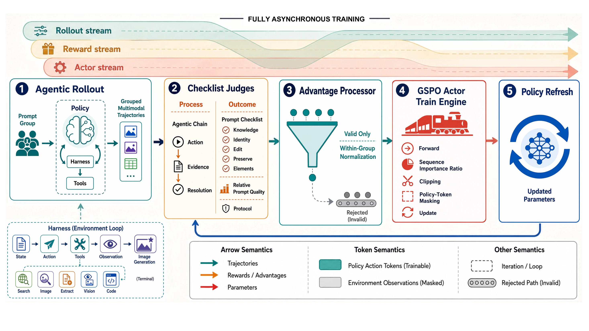
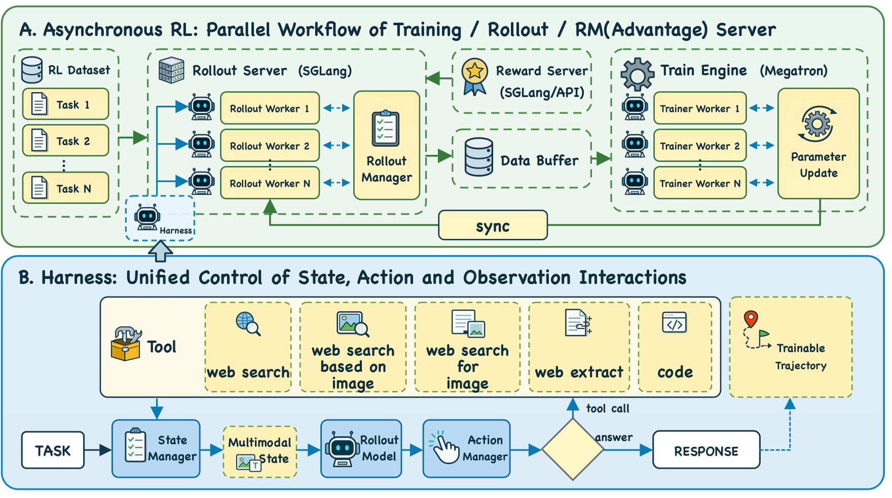
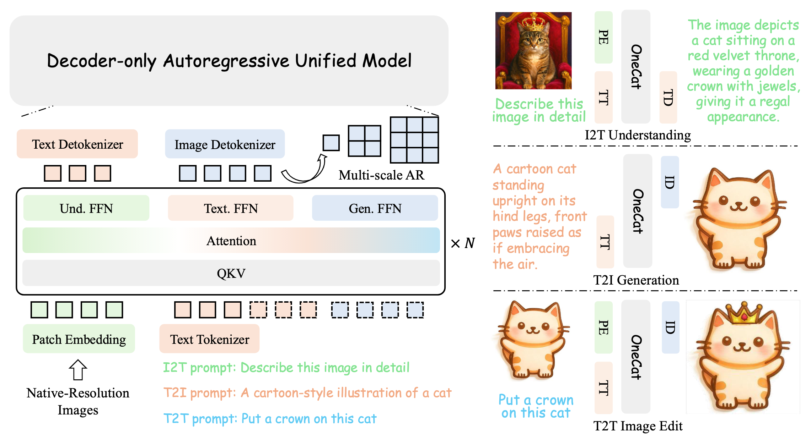
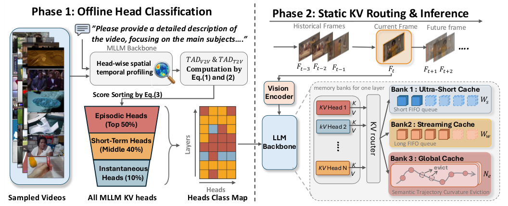
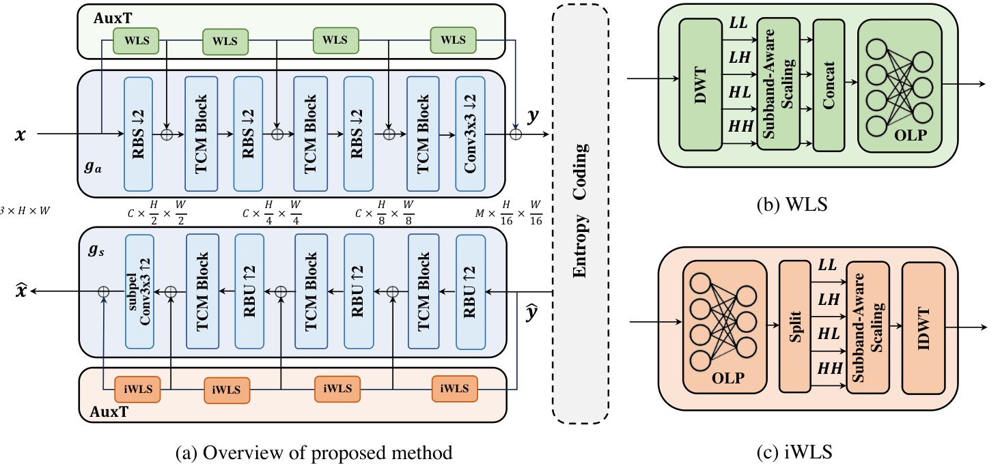
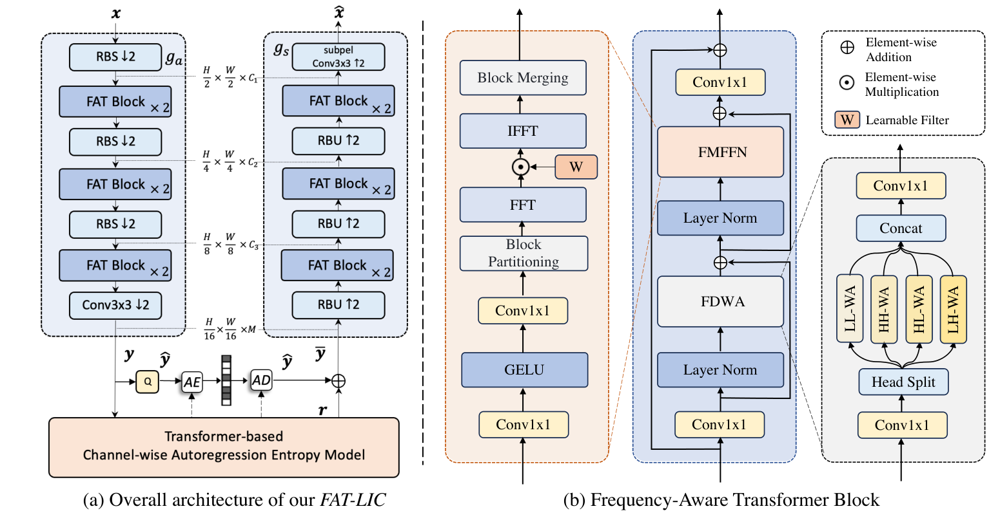

About
I am a researcher on the WeLM team at Weixin AI, where I work on post-training for multimodal foundation models. My current research interests include multimodal mid-training and reinforcement learning for general-purpose multimodal models and agents.
Previously, I worked on unified models for multimodal generation and understanding during a research internship with Meituan’s LongCat foundation model team. I received both my bachelor’s degree and Ph.D. from Shanghai Jiao Tong University (SJTU). My Ph.D. advisor was Prof. Hongkai Xiong.
Google Scholar · GitHub ·
Research Interests
- Unified multimodal models for generation and understanding
- Multimodal mid-training and foundation model post-training
- Reinforcement learning for general-purpose multimodal models and agents
Selected Publications
Full list on Google Scholar-
2026

-
2026

-
2026

OneCAT: Decoder-Only Auto-Regressive Model for Unified Understanding and Generation
CVPR 2026 · paper
-
2026

-
2025

On Disentangled Training for Nonlinear Transform in Learned Image Compression
ICLR 2025 (Spotlight) · paper
-
2024

Frequency-Aware Transformer for Learned Image Compression
ICLR 2024 · paper
Work Experience
- 2026–present
- WeLM Team, Weixin AI
Multimodal foundation model post-training - 2024–2026
- LongCat Team
Research intern; unified multimodal generation and understanding
Education
- 2021–2026
 Shanghai Jiao Tong University
Shanghai Jiao Tong University
Ph.D.- 2017–2021
- Shanghai Jiao Tong University
Bachelor’s degree